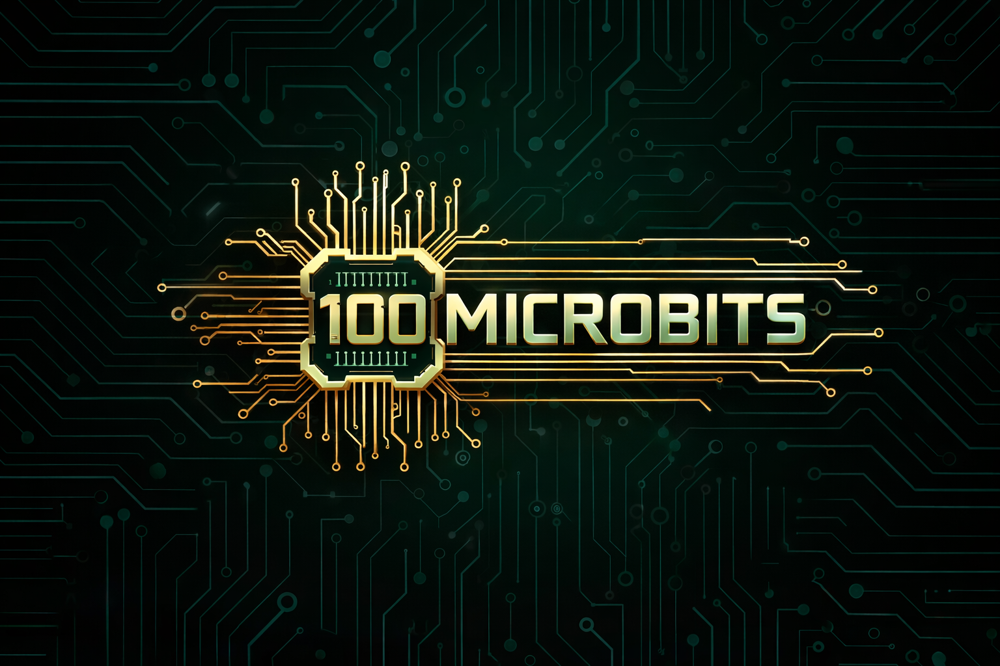

GameRank
Web con Django + HTMX: comentarios, puntuaciones y APIs/XML.
- Desarrollo en Linux.
- Backend + frontend con Bootstrap.
- Trabajo con datos y endpoints.
Django HTMX XML
Repositorio
100Microbits
Proyecto colaborativo con verificación formal (TLA+/PlusCal).
- Modelado y validación de propiedades.
- Trabajo en equipo y repositorio.
- Documentación técnica.
TLA+ PlusCal Git
RepositorioTactical Battle
Juego online en Python: cliente-servidor, multihilo y ranking.
- Gestión de conexiones y timeouts.
- Matchmaking y persistencia.
- Arquitectura cliente-servidor.
Python Sockets Threads
(acuerdate de linkar enlace)Diseño Wi-Fi Bulnes – Sotres
Planificación de red inalámbrica en entorno real.
- Simulación con Radio Mobile.
- Análisis de cobertura 2,4 GHz.
- Validación con medidas reales.
Radio Mobile WiFi Radio planning
MemoriaCertificación GSM900
Medidas radioeléctricas en laboratorio de telecomunicaciones.
- Uso de antena NARDA.
- Medición de niveles de potencia.
- Verificación de normativa.
RF GSM Medidas
Memoria
Robot Tubot
Robot tipo SUMO desarrollado para concurso universitario.
- Arduino UNO.
- Sensores IR y ultrasonidos.
- Control PWM y lógica de combate.
Arduino Robótica Electrónica
Detección de fases del sueño con EEG
Proyecto de análisis biomédico orientado a identificar diferentes fases del sueño a partir de señales EEG, combinando procesamiento tiempo-frecuencia y clasificación con SVM.
- Preprocesado y filtrado de señales EEG reales.
- Extracción de características en tiempo-frecuencia.
- Clasificación automática de fases del sueño con SVM.
EEG SVM Signal Processing Python SciPy Machine Learning
RepositorioClasificación de pacientes mediante ECG
Proyecto centrado en el análisis de ritmo cardíaco para distinguir pacientes con ritmo sinusal normal y casos de fibrilación auricular a partir de señales ECG.
- Procesamiento de señales biomédicas cardíacas.
- Extracción de patrones relevantes del ECG.
- Clasificación de pacientes según su ritmo cardíaco.
ECG Biomedical Classification Python SciPy Machine Learning
RepositorioComunicación Satelital
Proyecto centrado en el diseño y simulación de comunicaciones satelitales seguras, explorando cómo transmitir información cifrada a través de constelaciones LEO y GEO en un entorno modelado con MATLAB.
- Modelado de enlaces satelitales con MATLAB.
- Estudio de transmisión segura sobre constelaciones LEO y GEO.
- Análisis de cobertura, propagación y comportamiento del sistema.
Satellite Communications MATLAB LEO / GEO
RepositorioDiseño de red inalámbrica 5G y WiFi 6
Planificación y simulación de redes inalámbricas de nueva generación. El proyecto combina diseño de cobertura 5G en entorno semirural y despliegue de infraestructura WiFi 6 en interior, evaluando rendimiento, capacidad y calidad de servicio.
- Planificación de red 5G NR con herramientas profesionales de radio.
- Análisis de cobertura, capacidad y movilidad de usuarios.
- Diseño de red WiFi 6 optimizando cobertura y rendimiento interior.
5G NR WiFi 6 Radio Planning
MemoriaMás proyectos
¡Próximamente vendrán proyectos más interesantes!